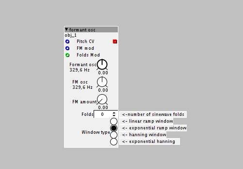

Anyone know if this is possible with Axolotl?
http://bagger288.com/goldenmaster/vosim-synthesis-for-the-masses/
It looks very simple, but doesn't seem to be possible with Factory objects (requires s-rate VCA).
Anyone any ideas?
a|x

Anyone know if this is possible with Axolotl?
http://bagger288.com/goldenmaster/vosim-synthesis-for-the-masses/
It looks very simple, but doesn't seem to be possible with Factory objects (requires s-rate VCA).
Anyone any ideas?
a|x
It also requires the formant osc. resets it's phase for on every rising edge of the saw wave.
I'm going to have a go at making a custom s-rate VCA and a sine osc with s-rate sync inlet to reset the phase on rising edge.
Incidentally, is the sine osc. band-limited? Or does it not need to be, if it doesn't have any harmonics that might exceed the Nyquist limit?
a|x
Incidentally, I love the way all the factory objects are just XML. It's great to be able to poke around inside and see how they work.
Would be nice if they had few comments though. Having said that, I do realise Axoloti is intended as a working synth, rather than an educational resource for DSP newbies.
a|x
The s-rate * object is an audio rate VCA/ring modulator, but of course this will probably get you some aliasing. The sine oscillator(s) don't need to be band limited themselves, but oversampling on the audio rate VCA would probably be a good idea.
I actually made something like this in Reaper's Jesusonic scripting language. It's pretty cool in an 'uncanny valley' way.
Good to know SirPrimalform.
I will try the s-rate * object when I get home (at work at the moment, and don't have access to my Axoloti).
I think I still need to make a sine with sync input though. Unless... I lowpass filter the sawtooth to smooth off the corners, which should have the effect of fading the sine in from silence over a few samples, which may remove the need to reset the phase.
What do you think?
a|x
Lowpassing the sawtooth might be a good idea in terms of reducing aliasing, but I think the phase reset is still a requirement. The purpose of resetting the phase is not just to avoid discontinuities, it also means that each cycle of the composite wave is the same. If the oscillators were all freerunning, the windowed sines would not sound like resonances of the base wave but independent and out of tune (unless they had a harmonic relationship to the base wave).
I know this because I tried it in my experiments, just to see what it would sound like. 
Ah, I see. That explains why I was just hearing something like a ringmod effect (and lots of clicks), when I tried it.
I read somewhere that the Casio CZ series of digital synths simulate filter resonance using a very similar technique. I'd never made the connection before, but listening to the example on the Golden Master page, it does sound very like the Phase Distortion waves from the Mutable Instruments Braids Euro module.
a|x
Ah yeah, this is pretty much exactly how the CZ resonant waveforms worked. In fact, when was doing my Jesusonic experiments it was as an extension of CZ resonance experiments. I had no idea VOSIM existed as a technique at that point, I just came up with the same concept myself (I kind of assumed someone would have already done it but I had no idea what the name was).
If I can get this working, I'd like to try FOF and Granular synthesis, too, based on these examples for the Nord Modular
http://www.cim.mcgill.ca/~clark/nordmodularbook/nm_oscillator.html#fof
I have an NM, so should be able to hear what they're supposed to sound like, and compare with my Axoloti attempts.
a|x
Incidentally, I was wondering if it might be possible to use a similar technique to flatten the pitch of an audio stream, as a kind of cheap auto-tune. I'm not sure how it would work in practice, though..
a|x
There's a 'pitch shifter' example in the Axoloti examples using a delay modulated with a phasor object. It stutters but I wonder if two delay-reads were set up 180 out of phase with crossfading to mask the wrap-around you might get a passable pitch shifter.
You're not going to get any kind of autotune without some method of reading the current pitch of the input though, otherwise it wouldn't know how much to pitch shift by to 'retune' the input.
I was thinking of interleaving two granular players, too.
I wasn't thinking so much of a pitch-shifter, as something akin to granular pitch-freezer that would force the input audio (would have to be monophonic, probably) to the pitch of the carrier wave, possibly by looping sections of a buffer in sync with a a carrier. Something like a cheap, realtime version of the NI Kontakt Time Machine mode.
There's a (now discontinued) Euro module called the Pitch-Shaper
http://www.gotharman.dk/Pitchshaper.htm
which does something like this, I think, so I'm sure it's possible.
a|x
I was just going by your use of the term auto-tune (which is basically a pitch shifter being intelligently controlled in response to pitch detection).
I sort of see where you're going with it, I'm not sure whether it would be possible in real-time though. It might be possible to sample the input into a table and then play that back granularly at a controllable pitch.
Sorry, yes, wrong terminology there.
This is what I have in mind:
Does this sound feasible? It's essentially realtime wavetable synthesis.
a|x
I should probably start another thread about this.
Actually, I should probably try and get VOSIM working, first...
a|x
Check this out: formant osc.axs (7.0 KB)

Basically there's a phasor oscillator that splits into two routes: the first is a sine wavefolder that allows to obtain sine pulses in a variable amount (but they are always phase synced with the phasor since they're generated this way!).
The second route is the "window" route, which allows to give a specific shape to the waveform.
In the end the window and the sine pulse train are multiplied and outputted.
Also, since the phasor object has audio rate fm input i added a sine oscillator to provide mixed synthesis techniques. The resulting object is somewhat heavy, with 8% dsp load. Eliminating the fm path would free 1%. There's some heavy aliasing at high pitches (which however would not be harmonically very interesting.
Anyone know if this is possible with Axolotl?
http://bagger288.com/goldenmaster/vosim-synthesis-for-the-masses/25
It looks very simple, but doesn't seem to be possible with Factory objects (requires s-rate VCA).
It is "almost" possible to create the VOSIM algorithm. I have a semi-working patch, but before posting it I would like to know two things:
1) is there is a way of getting a saw oscillator which is a decaying one, not a rising one.
I can create one by setting the cheap saw oscillator, then set a constant to 64 and subtract from this the output of the saw, but the constant is a green output and when connecting it to the math/- object the green cable is a dashed line. It seems to work, but I do not know if this is the correct way of doing this.
2) How does the phase red input of the osc/sine oscillator work? I mean what value triggers the phase?
Edit: I realised that I want to use a sync'ed sine oscillator but the toneburst/sinesync object does not compiles on 1.0.8.
Thanks
Did you try inverting the output of the oscillator? I am pretty sure that will give a decaying saw, as you describe it. There is an red(audio rate) inverter.